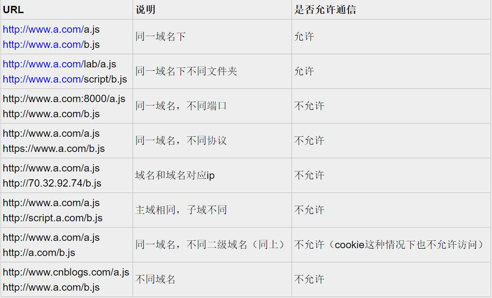

要说跨域，那得先来认识什么是跨域，以下内容摘自网络

总而言之就是浏览器厂商为了web安全，使得不同域名的网页之间，无法通信，在博主的web开发历程中，主要遇到的是以下几种跨域的情况。
- web api访问时
- iframe与父页面或顶层页面之间资源访问时
- 访问opener时
一般解决跨域问题可以从两个维度来解决
- web前端通过一些技巧来解决
- 后端的服务器解决
通过前端手段解决
通过前端来解决跨域问题是有限制的，但是能在不动后端代码的前提下已经能解决大部分的跨域问题了
解决web api的访问限制
这种情况不少，因为开发模式的问题（比如你接的前端私活，给你提供了接口挂在外网，但是没有给你后端的源码，你无法启动一个本地服务来开发），或者你使用的是别人的服务（如一些实时天气数据接口），都会遇到跨域问题。因为服务器一般情况下并不会相应一个非本域名下的请求，这也是出于安全的考虑。但是我们可以通过jsonp来解决这个问题。
我们都知道script标签可以引用来自任何域名下的js脚本文件（不存在的网站除外，你懂的），于是我们就可以通过这个特性来实现跨域访问一些api
比如有一个请求是这样的
1 | http://example.com/getData |
而我们的线上环境是http://mydomain.com，如果我们直接用XmlHttpRequest构造方法去发起这个请求，浏览器必定会抛出跨域的错误从而无法达到我们的预期，但是如果我们以这样的方式去请求这个接口
1 | <script src="http://example.com/getData"></script> |
你会说，这样就行了？ 慢着，这只是第一步，jsonp是需要通过后端的配合才能完成的。后端在此时的输出应该是一个执行的函数，实参是你要拿到的数据比如php
1 | // 这里只是一个例子，可能浏览器端不会执 |
当这个“资源文件”请求完成后，js引擎便会执行这段脚本，从全局环境寻找callback这个函数，于是如果你事先定义了这个函数，如：
1 | window.callback = function( data ) { |
控制台便会输出服务端返回的data，但是一般情况下不会这样去请求一个jsonp类型的接口，往往是动态生成一个script标签写入到页面响应后再移除，并且具体响应的函数通过参数的形式传到后台，比如
1 | <script src="http://example.com/getData?callback=yourcallback"></script> |
yourCallback就是你定义的相应函数。通过jsonp的方式访问跨域的api有很多弊端，比如
- 只能发起get请求，无法post数据
- 执行上下文只能是global(如果你要通过callback参数传递一串context我也无异议)
这是通过前端的办法（其实也有后端的配合）解决跨域api访问的限制。
解决iframe与父页面或顶层页面的通信(opener同理)
iframe与父页面之间的通信只能是根域名完全相同才行，比如：
如果根域名不同是无法通过常规手段进行通信的比如：
- a.com与b.com（包括二级三级域名）
- 1.1.1.1与a.com
要解决同根域名之间的跨域（如获取子/父页面的dom、属性、方法）其实很简单，只需要将它们的domain都设置成根域名就好了
1 | // a.iframe.com下面的脚本 |
这样，同根域名页面之间的跨域问题便解决了，可以自由操纵dom，自由读写属性和方法
通过后端服务解决
也许你只是想解决webapi的跨域问题又拒绝使用jsonp这种感觉有点‘low’的解决方案，这时候就轮到服务端代码登场了，通过修改响应头信息来告知浏览器这个请求是否是安全可靠的。
我们知道http协议的请求头/应头都有一串键值对，Origin这个属性会在我们的请求头里，Access-Control-Allow-Origin这个属性可能会在我们的响应头里（因为在本域名请求下这个属性有没有都无所谓），这就是我们能成功实现跨域接口访问的关键。当服务器端在access-Control-Allow-Origin里包含了我们的Origin，那浏览器就发起真正的请求，接口就能正确相应，这里以java为例
1 | // 这里是过滤器里面的方法 |
这里有两点要注意
- 浏览器检测到这是个跨域的请求时，会先发起一个请求方法为"options"的请求，所以服务端还必须得允许OPTIONS的请求类型
- jquery的ajax的请求头会有x-requested-with这样的字样，
response.setHeader("Access-Control-Allow-Headers", "x-requested-with")这段代码依然是告诉浏览器允许这个自定义请求头
往往允许一个跨域请求还要满足以上两点才能成功，总结一下浏览器的跨域api请求流程：
- 检测到这是一个跨域的请求（请求url的host和当前页面host不一样）;
- 先发起一个method为OPTIONS的请求，如果服务器的响应信息
Access-Control-Allow-Origin没有我们的host，或者不允许OPTIONS请求方法，或者不允许自定义请求头x-requested-with，请求停止，抛出错误。否则： - 再发一起一个正常的xhr请求，此时才会响应我们的逻辑回调函数
在浏览器的开发者工具 network一栏里筛选xhr类型的请求可以清楚的看到浏览器对同一个请求发起了两次，第一次是OPTION请求，没有带上任何参数，第二次就是常规的请求
以上则是博主对一些常见的跨域问题的解决方法的简单介绍，如有错误欢迎通过下方邮件指出。